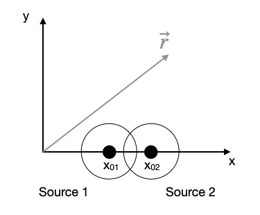

Plotting
Data visualization through plotting is a crucial tool for analyzing and interpreting scientific data and theoretical predictions. While plotting capabilities are not built into Python’s core, they are available through various external library modules. Matplotlib is widely recognized as the de facto standard for plotting in Python. However, several other powerful plotting libraries exist, including PlotLy, Seaborn, and Bokeh, each offering unique features and capabilities for data visualization.
As Matplotlib is an external library (actually a collection of libraries), it must be imported into any script that uses it. While Matplotlib relies heavily on NumPy, importing NumPy separately is not always necessary for basic plotting. However, for most scientific applications, you’ll likely use both. To create 2D plots, you typically start by importing Matplotlib’s pyplot module:
import matplotlib.pyplot as pltThis import introduces the implicit interface of pyplot for creating figures and plots. Matplotlib offers two main interfaces:
An implicit “pyplot” interface that maintains the state of the current Figure and Axes, automatically adding plot elements (Artists) as it interprets the user’s intentions.
An explicit “Axes” interface, also known as the “object-oriented” interface, which allows users to methodically construct visualizations by calling methods on Figure or Axes objects to create other Artists.
We will use most of the the the pyplot interface as in the examples below. The section Additional Plotting will refer to the explicit programming of figures.
We can set some of the parameters for the appearance of graphs globally. In case you still want to modify a part of it, you can set individual parameters later during plotting. The command used here is the
plt.rcParams.update()function, which takes a dictionary with the specific parameters as key.
Simple Plotting
Matplotlib offers multiple levels of functionality for creating plots. Throughout this section, we’ll primarily focus on using commands that leverage default settings. This approach simplifies the process, as Matplotlib automatically handles much of the graph layout. These high-level commands are ideal for quickly creating effective visualizations without delving into intricate details. At the end of this section, we’ll briefly touch upon more advanced techniques that provide greater control over plot elements and layout.
Anatomy of a Line Plot
To create a basic line plot, use the following command:
plt.plot(x, y)By default, this generates a line plot. However, you can customize the appearance by adjusting various parameters within the plot() function. For instance, you can modify it to resemble a scatter plot by changing certain arguments. The versatility of this command allows for a range of visual representations beyond simple line plots.
Let’s create a simple line plot of the sine function over the interval [0, 4π]. We’ll use NumPy to generate the x-values and calculate the corresponding y-values. The following code snippet demonstrates this process:
1x = np.linspace(0, 4.*np.pi, 100)
2y = np.sin(x)
3plt.figure(figsize=(4,3))
4plt.plot(x, y)
5plt.tight_layout()
6plt.show()- 1
- Create an array of 100 values between 0 and 4π.
- 2
- Calculate the sine of each value in the array.
- 3
- create a new figure
- 4
- plot the data
- 5
- automatically adjust the layout
- 6
- show the figure
Here is the code in a Python cell:
Try to change the values of the x and y arrays and see how the plot changes.
plt.tight_layout() is a very useful function in Matplotlib that automatically adjusts the spacing between plot elements to prevent overlapping and ensure that all elements fit within the figure area. Here’s what it does:
Padding Adjustment: It adjusts the padding between and around subplots to prevent overlapping of axis labels, titles, and other elements.
Subplot Spacing: It optimizes the space between multiple subplots in a figure.
Text Accommodation: It ensures that all text elements (like titles, labels, and legends) fit within the figure without being cut off.
Margin Adjustment: It adjusts the margins around the entire figure to make sure everything fits neatly.
Automatic Resizing: If necessary, it can slightly resize subplot areas to accommodate all elements.
Legend Positioning: It takes into account the presence and position of legends when adjusting layouts.
Key benefits of using plt.tight_layout():
- It saves time in manual adjustment of plot elements.
- It helps create more professional-looking and readable plots.
- It’s particularly useful when creating figures with multiple subplots or when saving figures to files.
You typically call plt.tight_layout() just before plt.show() or plt.savefig(). For example:
plt.figure()
# ... (your plotting code here)
plt.tight_layout()
plt.show()Axis Labels
To enhance the clarity and interpretability of our plots, it’s crucial to provide context through proper labeling. Let’s add descriptive axis labels to our diagram, a practice that significantly improves the readability and comprehension of the data being presented.
plt.xlabel('x-label')
plt.ylabel('y-label')Legends
plt.plot(..., label=r'$\sin(x)$')
plt.legend(loc='lower left')Plots with error bars
When plotting experimental data it is customary to include error bars that indicate graphically the degree of uncertainty that exists in the measurement of each data point. The MatPlotLib function errorbar plots data with error bars attached. It can be used in a way that either replaces or augments the plot function. Both vertical and horizontal error bars can be displayed. The figure below illustrates the use of error bars.
Saving figures
To save a figure to a file we can use the savefig method in the Figure class. Matplotlib can generate high-quality output in a number formats, including PNG, JPG, EPS, SVG, PGF and PDF. For scientific papers, I recommend using PDF whenever possible. (LaTeX documents compiled with pdflatex can include PDFs using the includegraphics command). In some cases, PGF can also be good alternative.
Other Plot Types
Scatter plot
If you prefer to use symbols for plotting just use the
plt.scatter(x,y)command of pylab. Note that the scatter command requires a x and y values and you can set the marker symbol (see an overview of the marker symbols).
Histograms
A very useful plotting command is also the hist command. It generates a histogram of the data provided. A histogram is a graphical representation of the distribution of numerical data. It is an estimate of the probability distribution of a continuous variable. To construct a histogram, the first step is to “bin” the range of values—that is, divide the entire range of values into a series of intervals—and then count how many values fall into each interval. The bins are usually specified as consecutive, non-overlapping intervals of a variable. The bins must be adjacent, and are often (but not required to be) of equal size.
When using the histogram function, you have flexibility in how the data is grouped. If you only provide the dataset, the function will automatically determine appropriate bins. However, you can also specify custom bins by passing an array of intervals using the syntax hist(data, bins=b), where b is your custom array of bin edges. To normalize the histogram so that the total area under it equals 1, you can set the density parameter to True. It’s worth noting that the histogram function doesn’t just create a visual representation; it also returns useful information such as the count of data points in each bin and the bin edges themselves.
Let’s integrate histogram plotting with a fundamental physics concept: the simple harmonic oscillator in one dimension. This system is described by a specific equation of motion:
\[\begin{equation} \ddot{x}(t) = -\omega^2 x(t) \end{equation}\]
For an initial elongation \(\Delta x\) at \(t=0\), the solution is:
\[\begin{equation} x(t) = \Delta x \cos(\omega t) \end{equation}\]
To calculate the probability of finding the spring at a certain elongation, we need to consider the time spent at different positions. The time \(dt\) spent in the interval [\(x(t)\), \(x(t)+dx\)] depends on the speed:
\[\begin{equation} v(t) = \frac{dx}{dt} = -\omega \Delta x \sin(\omega t) \end{equation}\]
The probability of finding the oscillator in a certain interval is the fraction of time spent in this interval, normalized by half the oscillation period \(T/2\):
\[\begin{equation} \frac{dt}{T/2} = \frac{1}{T/2}\frac{dx}{v(t)} = \frac{1}{T/2}\frac{-dx}{\omega \Delta x \sin(\omega t)} \end{equation}\]
Given that \(\omega = 2\pi/T\), we can derive the probability density:
\[\begin{equation} p(x)dx = \frac{1}{\pi \Delta x}\frac{dx}{\sqrt{1-\left(\frac{x(t)}{\Delta x}\right)^2}} \end{equation}\]
This probability density reveals that the spring is more likely to be found at elongations where its speed is low. This principle extends to non-equilibrium physics, where entities moving with variable speed are more likely to be found in locations where they move slowly.
We can visualize this using the histogram function. By evaluating the position at equidistant times using the equation of motion and creating a histogram of these positions, we can represent the probability of finding the oscillator at certain positions. When properly normalized, this histogram will reflect the theoretical probability density we derived.
Setting plotting limits and excluding data
If you want to zoom in to s specific region of a plot you can set the limits of the individual axes.
Masked arrays
Sometimes you encounter situations, when you wish to mask some of the data of your plot, because they are not showing real data as the vertical lines in the plot above. For this purpose, you can mask the data arrays in various ways to not show up. The example below uses the
np.ma.masked_where()function of NumPy, which takes a condition as the first argument and what should be returned if that condition is fulfilled.
If you look at the resulting array, you will find, that the entries have not been removed but replaced by --, so the values are not existent and thefore not plotted.

Data sets can span many orders of magnitude from fractional quantities much smaller than unity to values much larger than unity. In such cases it is often useful to plot the data on logarithmic axes.
Semi-log plots
For data sets that vary exponentially in the independent variable, it is often useful to use one or more logarithmic axes. Radioactive decay of unstable nuclei, for example, exhibits an exponential decrease in the number of particles emitted from the nuclei as a function of time.
MatPlotLib provides two functions for making semi-logarithmic plots, semilogx and semilogy, for creating plots with logarithmic x and y axes, with linear y and x axes, respectively. We illustrate their use in the program below, which made the above plots.
Log-log plots
MatPlotLib can also make log-log or double-logarithmic plots using the function loglog. It is useful when both the \(x\) and \(y\) data span many orders of magnitude. Data that are described by a power law \(y=Ax^b\), where \(A\) and \(b\) are constants, appear as straight lines when plotted on a log-log plot. Again, the loglog function works just like the plot function but with logarithmic axes.
Combined plots
You can combine multiple data with the same axes by stacking multiple plots.
Arranging multiple plots
Often you want to create two or more graphs and place them next to one another, generally because they are related to each other in some way.
Matplotlib can also be used to create animations. The FuncAnimation class makes it easy to create animations by repeatedly calling a function to update the plot. The following example shows a simple pendulum animation.
Simple contour plot
Contour and Density Plots
A contour plots are useful tools to study two dimensional data, meaning \(Z(X,Y)\). A contour plots the lines of constant value of the function \(Z\).
Understanding Wave Interference
Imagine throwing two stones into a pond. Each stone creates circular waves that spread out. When these waves meet, they create interesting patterns - this is called interference. Let’s explore this using physics and Python!
What is a Wave?
A wave can be described mathematically. For our example, we’ll look at spherical waves (like those in the pond). Each wave has: - An amplitude (how tall the wave is) - A wavelength (distance between wave peaks) - A frequency (how fast it oscillates)
Mathematical Description
For a single wave source, we can write: \[\begin{equation} U(r)=e^{-i\,k r} \end{equation}\]
Where: - \(k\) is related to the wavelength (\(k = 2\pi/\lambda\)) - \(r\) is the distance from the source - We’ve simplified by ignoring how the wave gets smaller as it travels (\(1/r\) term)
Two Wave Sources
When we have two wave sources (like two stones dropped in the pond): 1. Each source creates its own wave 2. The waves combine where they meet 3. The total wave is the sum of both waves

Mathematically: \[\begin{equation} U_{total} = e^{-i\,k r_1} + e^{-i\,k r_2} \end{equation}\]
Where \(r_1\) and \(r_2\) are the distances from each source.
What We See (Intensity)
What we actually see is the intensity of the combined waves:
\[\begin{equation} \text{Intensity} \propto |U_{total}|^2 \end{equation}\]
This will show us where the waves:
- Add up (bright regions - constructive interference)
- Cancel out (dark regions - destructive interference)
Let’s create a Python program to visualize this!
Color contour plot
Image plot
Advanced Plotting - Explicit Version
While we have so far largely relied on the default setting and the automatic arrangement of plots, there is also a way to precisely design your plot. Python provides the tools of object oriented programming and thus modules provide classes which can be instanced into objects. This explicit interfaces allows you to control all details without the automatisms of pyplot.
The figure below, which is taken from the matplotlib documentation website shows the sets of commands and the objects in the figure, the commands refer to. It is a nice reference, when creating a figure.

Plots with Multiple Spines
Sometimes it is very useful to plot different quantities in the same plot with the same x-axis but with different y-axes. Here is some example, where each line plot has its own y-axis.
Insets
Insets are plots within plots using their own axes. We therefore need to create two axes systems, if we want to have a main plot and and inset.
Spine axis
Polar plot
Text annotation
Annotating text in matplotlib figures can be done using the text function. It supports LaTeX formatting just like axis label texts and titles:
3D Plotting
Matplotlib was initially designed with only two-dimensional plotting in mind. Around the time of the 1.0 release, some three-dimensional plotting utilities were built on top of Matplotlib’s two-dimensional display, and the result is a convenient (if somewhat limited) set of tools for three-dimensional data visualization. Three-dimensional plots are enabled by importing the mplot3d toolkit, included with the main Matplotlib installation:
Once this submodule is imported, a three-dimensional axes can be created by passing the keyword projection=‘3d’ to any of the normal axes creation routines:
Projection Scence
With this three-dimensional axes enabled, we can now plot a variety of three-dimensional plot types. Three-dimensional plotting is one of the functionalities that benefits immensely from viewing figures interactively rather than statically in the notebook; recall that to use interactive figures, you can use %matplotlib notebook rather than %matplotlib inline when running this code.
Line Plotting in 3D
from sets of (x, y, z) triples. In analogy with the more common two-dimensional plots discussed earlier, these can be created using the ax.plot3D and ax.scatter3D functions. The call signature for these is nearly identical to that of their two-dimensional counterparts, so you can refer to Simple Line Plots and Simple Scatter Plots for more information on controlling the output. Here we’ll plot a trigonometric spiral, along with some points drawn randomly near the line:
Notice that by default, the scatter points have their transparency adjusted to give a sense of depth on the page. While the three-dimensional effect is sometimes difficult to see within a static image, an interactive view can lead to some nice intuition about the layout of the points. Use the scatter3D or the plot3D method to plot a random walk in 3-dimensions in your exercise.
Surface Plotting
A surface plot is like a wireframe plot, but each face of the wireframe is a filled polygon. Adding a colormap to the filled polygons can aid perception of the topology of the surface being visualized: